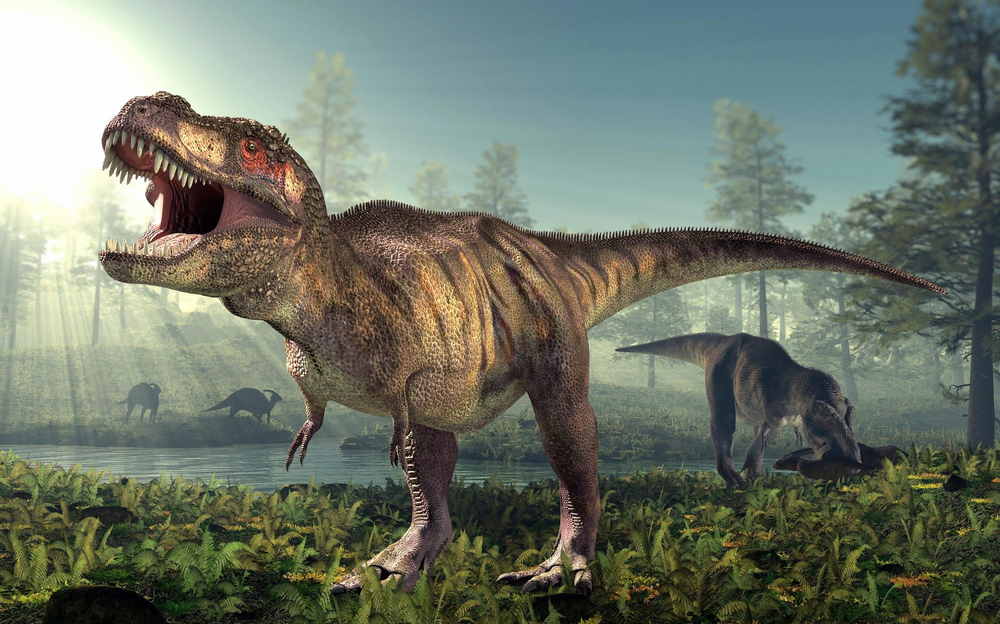
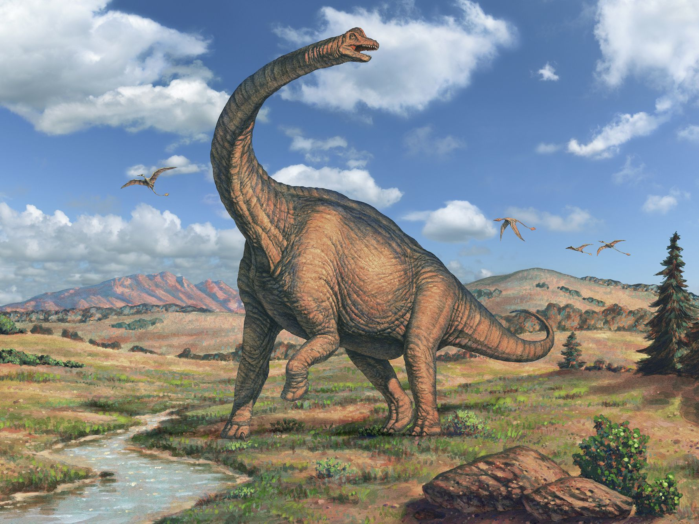

Dinosaur Facts
1. The Velociraptor is commonly called a raptor.
2. Estimates put the top running speed of a Velociraptor
up to 40 miles per hour.
3. The Velociraptor was a carnivorous predator who ate meat.
4. The name Velociraptor means: "Quick Plunderer" or "Rapid Robber".
5. Paleontologists think the Velociraptor may have had
feathers like other dromaeosaurids.

1. The Tyrannosaurus Rex roamed North America,
specifically the areas we now call Canada and the United States.
2. The Tyrannosaurus Rex had between 50 and 60 large teeth.
3. Estimates put the running speed of a Tyrannosaurus Rex
between 10 and 25 miles per hour.
4. The Tyrannosaurus Rex was part of a group of dinosaurs known as theropod.
5. The Tyrannosaurus Rex was a carnivorous predator who ate meat.

1. The Triceratops was part of a group of dinosaurs known as ceratopsids.
2. The Triceratops lived in North America.
3. Estimates put the top running speed of a Triceratops up to 20 mph.
4. The Triceratops was a herbivore who ate foliage near the ground.
5. The Triceratops was able to fight off predators with
its three horns and the bony frill on its head.

1. The Stegosaurus was a herbivore who ate foliage near the ground.
2. The Stegosaurus wasn’t an easy meal for predators. The
plates on its back and spiked tail of a Stegosaurus were a excellent way to
defend its against predators.
3. The brain of a Stegosaurus was the size of a walnut.
4. The Stegosaurus was part of a group of dinosaurs known as thyreophorans.
5. The Stegosaurus had between 17 and 22 protective plates on its back.

1. The name Spinosaurus means: "Spine Lizard".
2. The Spinosaurus roamed North Africa based on where
fossilized skeletons have been discovered.
3. The Spinosaurus was a carnivorous predator who ate meat.
4. The Spinosaurus is the largest carnivorous dinosaur known to exist.
5. Some paleontologists believe the Spinosaurus had
pressure sensors on its snout, just like an alligator, to detect potential prey
moving in the water.

1. Pterodactyls are not actually dinosaurs, they are a
pterosaurs and considered a flying reptile.
2. Estimates put the average wing span of a Pterodactyl around 3-4 feet.
3. Pterodactyl fossil remains have been found in Africa and Europe.
4. The Pterodactyl was a carnivore that ate meat. Their
diet most likely consisted of fish and other small animals.
5. The Pterodactyl had an elongated beak with about 90 razor sharp teeth.

1. The name Mosasaurus means: "Lizard of the Meuse River".
2. The Mosasaurus lived in the Late Cretaceous Period
between 66 and 70 million years ago.
3. The largest discovered specimen of Mosasaurus had a length of up to 56 feet.
4. The Mosasaurus was a carnivorous aquatic hunter, and
their prey was most likely fish, marine reptiles, birds, pterosaurs, smaller
mosasaurs and maybe even land dinosaurs.
5. The Mosasaurus spent most of its time near the ocean
surface, much like modern whales do, since they breathed air in a similar
fashion.

1. Brachiosaurus lived in North America.
2. The length of Brachiosaurus is believed to have been
around 26 metres (85 feet).
3. The Brachiosaurus was a herbivore (plant eater), that
fed on foliage high above the ground.
4. The Brachiosaurus is a type of dinosaur known as a
Sauropod, they are famous for reaching incredible sizes. Other members of the
Sauropod family include the Diplodocus and Apatosaurus.
5. The weight of Brachiosaurus has been estimated between 30 and 45 metric tons.
